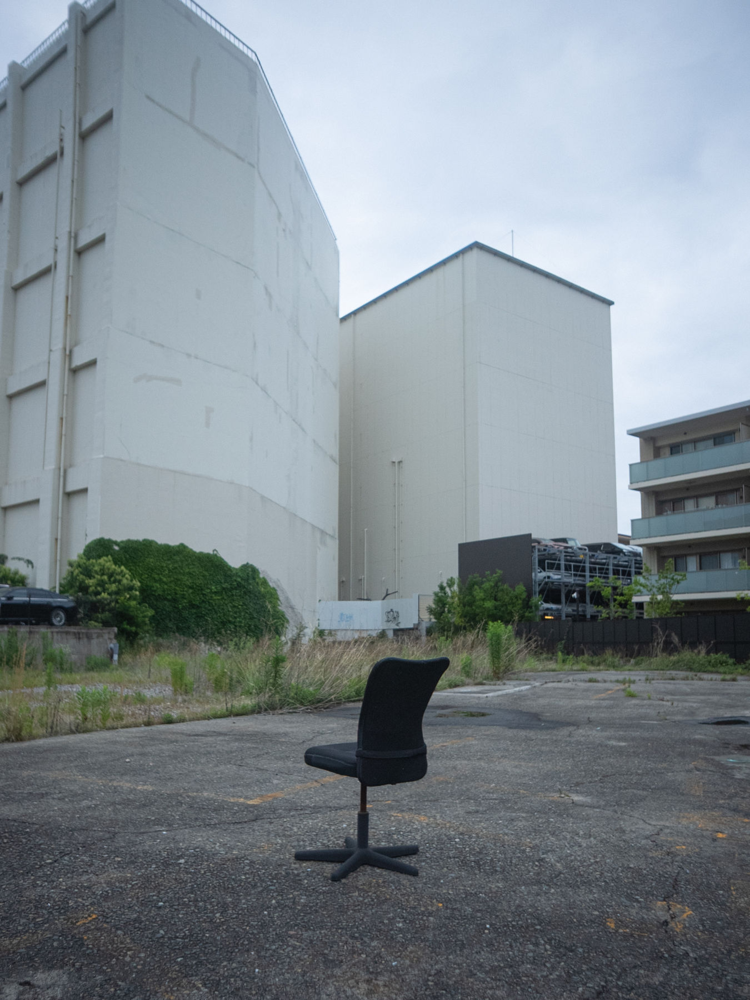

写真には写っていないのに気配がする。

Concept
閑静な空き地にポツンと置かれた一脚の椅子を見つけた。違和感を覚えると同時に、魅力を感じた。その魅力を深掘りしていくと、人物は写っていないのに、「誰かがいた」という気配を感じてしまう。この実感が、この研究の出発点である。
写真の中には、二つの層があると考えた。一つは、写っている物が、撮影の瞬間確かにそこにあったという、物の実在の層である。これはロラン・バルトが『明るい部屋』で写真の本質と定義した「かつてそこにあった」ことで、写真が証明している部分だ。もう一つは、そこにいたかもしれない誰かや、あったかもしれない何かのように、今はそこにいない存在を、証明されていないのに感じてしまう層である。この存在を、気配と定義する。
研究として注目しているのは、写真で証明されている存在と、証明されていない存在(気配)の間で起きていることだ。写真は、物がそこにあったことを証明する。その確かさがあるからこそ、証明されていない気配まで、確かなものとして感じてしまうのではないか。写真というメディアの特性に関わるこの見立てを、撮りながら探っている。
撮影場所は、街を歩いて探す。人がいるべき場所にいない、誰かの痕跡がある、廃れた場所。撮るかどうかは、自分の感覚に委ねている。痕跡がはっきり残る場所と、ほとんど何もない場所の両方を撮り、確かさの違いが、気配の感じ方をどう変えるのかを見ている。
作品としては、撮る場所や切り取り方で自分の視点は示すが、答えは提示しない。届けたいのは、気配に気づくきっかけ、その入り口である。何を感じるか、あるいは何も感じないかも含めて、受け取り方は見る人に委ねている。
そして、この作品を入り口に、普段の生活の中でも、目にしていなかったものや「不在の感覚」に気づけるようになってほしい。